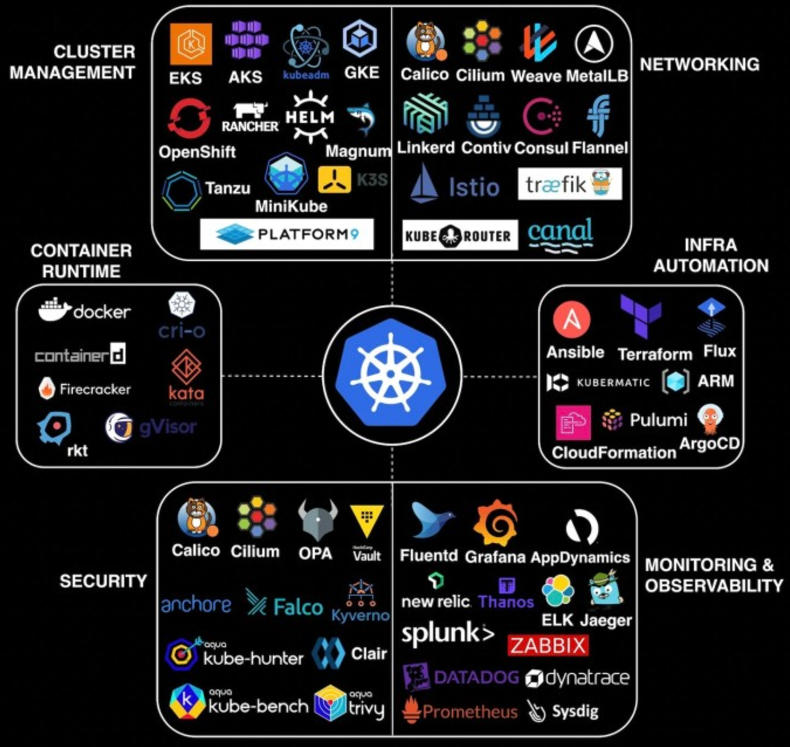
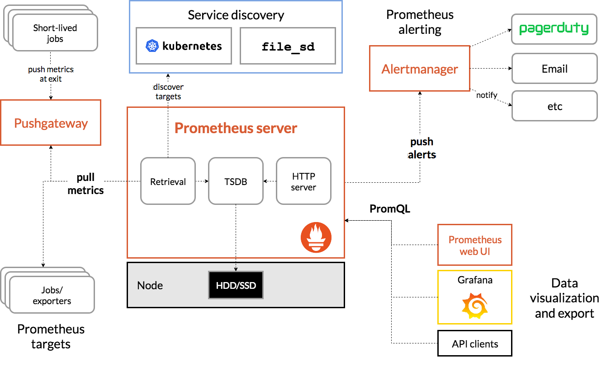
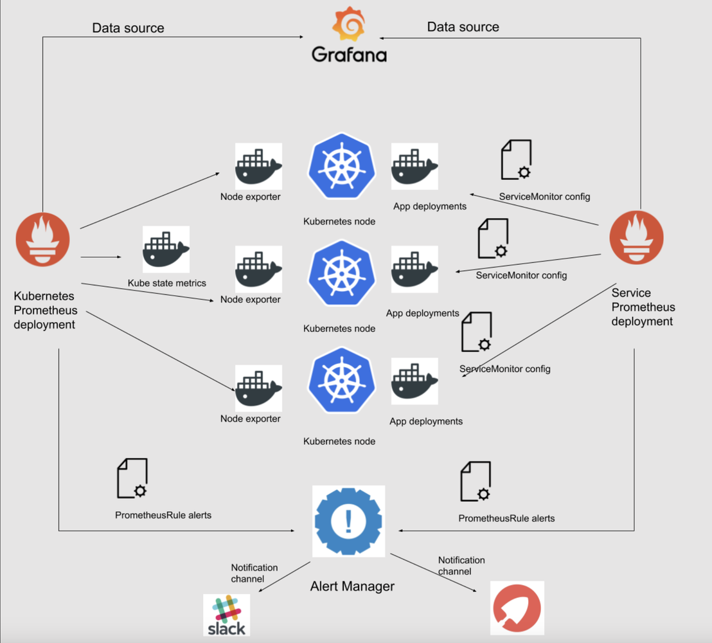
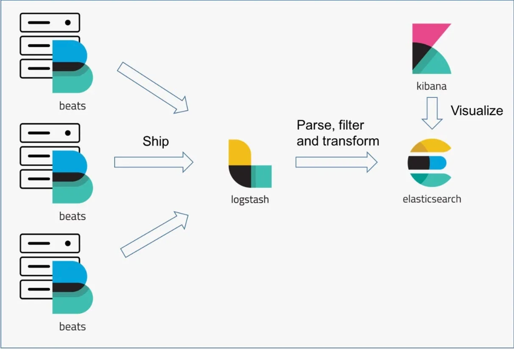

Hệ sinh thái công cụ giám sát mã nguồn mở (Open Source) cho Kubernetes là một trong những hệ sinh thái lớn và phát triển nhanh nhất của cộng đồng CNCF (Cloud Native Computing Foundation). Đây là lựa chọn phổ biến nhất để bắt đầu vì miễn phí, tự chủ và không bị khoá chặt (vendor lock-in) — bạn chỉ tốn công sức cài đặt và vận hành.

| Mục đích | Một số tool thường dùng |
|---|---|
| Giám sát cluster/node status | Prometheus + Grafana, Lens, Metrics Server, K9S, Node Exporter |
| Thu thập metrics | Prometheus, cAdvisor, OpenTelemetry, StatsD Exporter |
| Thu thập log | Fluentd, Fluent Bit, Loki, Logstash, Vector, Filebeat, OpenTelemetry Collector |
| Lưu trữ log | ElasticSearch, Loki, Graylog, Kafka, TimescaleDB, InfluxDB |
| Visualize metrics | Grafana, Kibana, Prometheus Web UI, OpenSearch Dashboard, VictoriaMetrics |
| Visualize log | Grafana + Loki, Kibana, Graylog, NetData, Jaeger UI |
| Health check | K8s Native Probe, kubelet, Prometheus, K9S, Lens, Blackbox Exporter, HealthCheck Operator |
| Service Mesh | Linkerd, Istio, Consul (HashiCorp), Kuma (Kong), Open Service Mesh, Traefik Mesh, NGINX Service Mesh |
| Request Tracing | Istio, Jaeger, Zipkin, OpenTelemetry, Tempo, Kiali |
| Alert | AlertManager, Grafana Alerting, Kured, BotKube, Karma, Sentry |
| Resource Provisioning | Karpenter, Cluster Autoscaler, Virtual Kubelet, Volcano, Goldilocks, VPA, Descheduler |
Prometheus (thu thập & lưu trữ metrics) kết hợp với Grafana (visualize) là bộ đôi phổ biến nhất để giám sát metrics trên Kubernetes — gần như là "tiêu chuẩn ngầm" của ngành.


:9100/metrics.
Khi nào nên dùng: dự án nhỏ/vừa, muốn tiết kiệm chi phí, đội ngũ có người hiểu vận hành, hoặc cần kiểm soát dữ liệu tuyệt đối. Khi nào không nên: đội ngũ nhỏ không có người trực vận hành, hoặc doanh nghiệp cần SLA/ hỗ trợ chính thức — hãy cân nhắc Managed Service hay SaaS ở chương sau.
Dùng Prometheus + Grafana + Node Exporter để theo dõi node và pod cho cluster tự quản lý, không phụ thuộc cloud nào.
Dùng Filebeat (DaemonSet) + Logstash + Elasticsearch + Kibana để gom toàn bộ log ứng dụng về một chỗ, dễ tìm kiếm.
Kết hợp Prometheus (metrics) + Loki (log) + Tempo (tracing) thành một "Grafana stack" đồng bộ, cùng một giao diện.